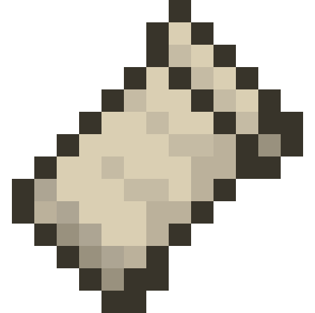

fabric.
A lightweight modding toolchain for Minecraft
Fabric Loader
Fabric loader is the mod loader used to run mods.
Download the Installer
Fabric API
Most mods depend on Fabric API. A set of commonly used hooks.
Download API
Why Choose Fabric?
Lightweight and Modular
Fabric's APIs are modular and lightweight. Fabric instances load fast and it makes porting them easier.
Fast Updates
Fabric updates with snapshots and release versions, so mods can update earlier and plan their releases better.
Community Driven
Fabric is planned and put together by the community who use it to design APIs that you will like.
Open Source
Fabric is truly open source, every bit of it; meaning you can use and change it to work however you want it to.
Repositories
Fabric API
Fabric API is our “hook layer”, providing the most common hooks and interoperability required for Fabric mods.
View Github
Fabric Loader
Fabric Loader is our version-independent mod loader, providing mod loading and code patching functionality.
View Github
Fabric Loom
Fabric Loom is our Gradle-based build system, used for developing Fabric mods.
View Github
Yarn
Yarn providides deobfuscated/friendly names for the most recent versions of the game based on community contributions.
View Github
Intermediary
Intermediary provides stable cross-version names and match information between Minecraft releases.
View Github
Fabric Installer
A tool for creating Fabric-ready profiles for the official Minecraft launcher.
View Github
Enigma
The Fabric project maintains a fork of
Enigma
, a tool for deobfuscation of Java classes originally by Cuchaz Interactive.
View Github
Downlaod
Tiny Remapper
The tiny-remapper project provides a fast, optimized tool for accurately remapping .JAR files using the Tiny mapping format.
View Github
Fernflower
A modified version of JetBrains’ upstream with line number mapping information exposed.
View Github
Matcher
Matcher, sfPlayer1’s tool for tracking elements in obfuscated Java archives across releases used for updating Yarn mappings.
View Github
Stitch
Stitch is an assortment of small tools providing functionality used by the Fabric project in command-line form.
View Github
Weave
Weave is an earlier iteration of Stitch and is now generally only used to export Enigma-format mappings to Tiny-format files.
View Github
Mixin
A fork of
Mixin
is a trait/mixin framework for Java bytecode created by Mumfrey for Sponge.
View Github
Fabric language Kotlin
Fabric language module for the Kotlin Language.
View Github
Fabric Language Scala
Fabric language module for the Scala Language.
View Github
Tiny Mappings Parser
A library for processing Tiny-format mapping files.
View Github